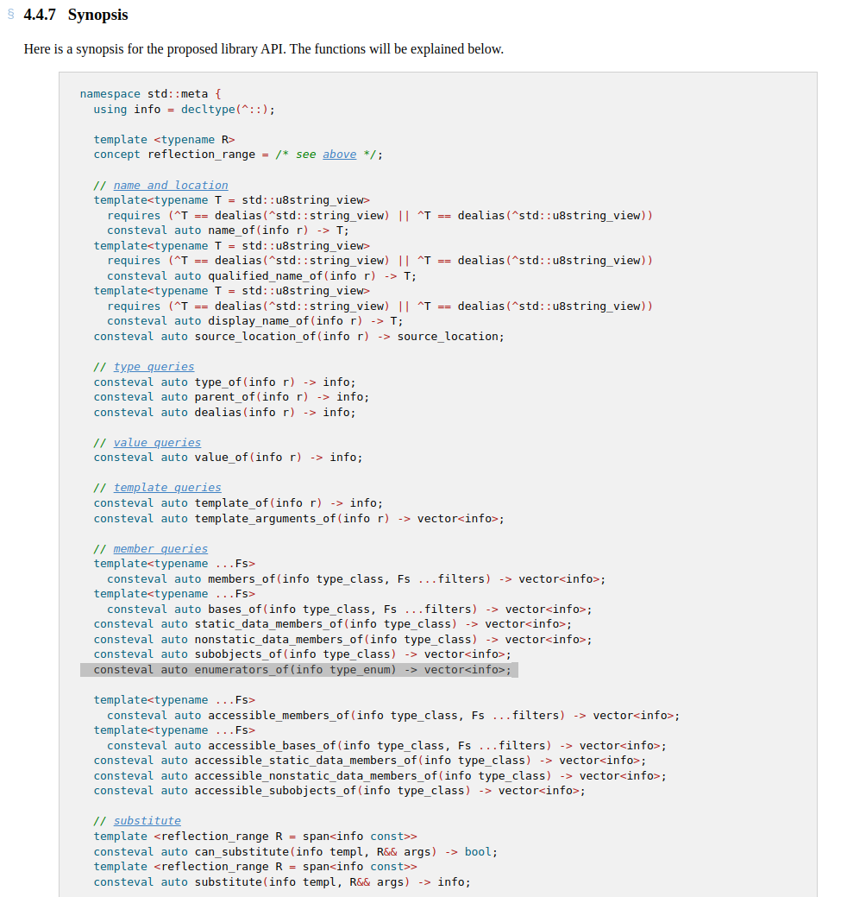
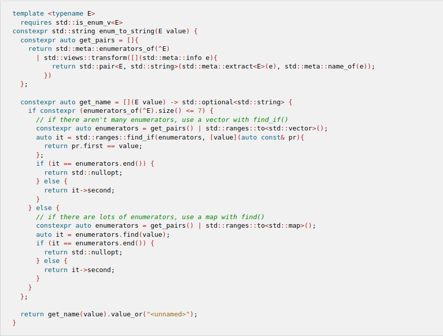

<!doctype html>
<html>
  <head>
    <meta charset="utf-8">
    <meta name="viewport" content="width=device-width, initial-scale=1.0, maximum-scale=1.0, user-scalable=no">

    <title>Run-time optimizations for compile-time reflection</title>

    <link rel="stylesheet" href="reveal.js/css/reveal.css">
    <link rel="stylesheet" href="reveal.js/css/theme/league.css" id="theme">
    <link rel="stylesheet" href="extensions/plugin/line-numbers/line-numbers.css">
    <link rel="stylesheet" href="extensions/css/highlight-styles/zenburn.css">
    <link rel="stylesheet" href="extensions/css/custom.css">

    <style>
      .reveal h1, .reveal h2, .reveal h3, .reveal h4, .reveal h5 { text-transform: none; }
    </style>

    <script>
      var link = document.createElement( 'link' );
      link.rel = 'stylesheet';
      link.type = 'text/css';
      link.href = window.location.search.match( /print-pdf/gi ) ? 'reveal.js/css/print/pdf.css' : 'reveal.js/css/print/paper.css';
      document.getElementsByTagName( 'head' )[0].appendChild( link );

      function set_address(self, remote, local) {
        if (window.location.search.match("local")) {
          self.href = local;
        } else {
          self.href = remote;
        }
      }
    </script>

    <meta name="description" content="Compile-time reflections">
    <meta name="author" content="Kris Jusiak">
    <meta name="apple-mobile-web-app-capable" content="yes">
    <meta name="apple-mobile-web-app-status-bar-style" content="black-translucent">
  </head>

  <body>
    <div class="reveal">
      <div class="slides">
          <script type="text/template">
          </script>
          </section>

          <section data-markdown=""
                   data-separator="^====+$"
                   data-separator-vertical="^----+$">
          <script type="text/template">


---

## Run-time optimizations for compile-time reflection


---

###### [kris@jusiak.net](mailto:kris@jusiak.net) | [@krisjusiak](https://twitter.com/krisjusiak) | [linkedin.com/in/kris-jusiak](https://www.linkedin.com/in/kris-jusiak)

----

#### Agenda

- #### Reflection
<!-- .element: class="fragment" -->

    - #### Introspection
    <!-- .element: class="fragment" -->

    - #### Meta-programming
    <!-- .element: class="fragment" -->

- #### [Performance] Case study
<!-- .element: class="fragment" -->

    - `enum_to_string`
    <!-- .element: class="fragment" -->

    - `string_to_enum`
    <!-- .element: class="fragment" -->

- Summary
<!-- .element: class="fragment" -->

----

#### Disclaimer

- ##### Based on proposals
<!-- .element: class="fragment" -->

- ##### Focused on x86-64
<!-- .element: class="fragment" -->

- ##### Powered by Compiler Explorer (https://godbolt.org)
<!-- .element: class="fragment" -->

  - ##### Clang (https://github.com/bloomberg/clang-p2996)
  <!-- .element: class="fragment" -->

---

### Quick look at P2996 (Reflection for C++26)

- wg21.link/P2996

    - ##### static (compile-time)
    <!-- .element: class="fragment" data-fragment-index="0" -->

      - ##### value/consteval based
      <!-- .element: class="fragment" data-fragment-index="1" -->

----

- Introspection

    <a href="https://www.open-std.org/jtc1/sc22/wg21/docs/papers/2024/p2996r3.html#member-queries"></a>

----

- Meta-programming

    ```cpp
    [: // splicer (reify)
    ```
    <!-- .element: class="fragment" data-fragment-index="3" -->

    ```cpp
      ^T // lift (reflexpr)
    ```
    <!-- .element: class="fragment" data-fragment-index="2" -->

    ```cpp
    :]
    ```
    <!-- .element: class="fragment" data-fragment-index="3" -->

    ---

    ```cpp
    static_assert(
      typeid(^T) ==           // type-erased AST info
      typeid(std::meta::info)
    );
    ```
    <!-- .element: class="fragment" data-fragment-index="4" -->

    ```cpp
    static_assert(
      typeid(typename [: ^int :]) == typeid(int)
    );
    ```
    <!-- .element: class="fragment" data-fragment-index="5" -->

----

##### P2996 / meta-programming (https://godbolt.org/z/43Yf8G8xz)

```cpp
template<size_t N, class... Ts>
using at =
```
<!-- .element: class="fragment" data-fragment-index="0" -->

```cpp
  typename [: // splicer (reify)
```
<!-- .element: class="fragment" data-fragment-index="2" -->

```cpp
    std::array{^Ts...}[N] // lift into std::array{std::meta::info}
```
<!-- .element: class="fragment" data-fragment-index="1" -->

```cpp
  :];
```
<!-- .element: class="fragment" data-fragment-index="2" -->

---

```cpp
static_assert(typeid(int)   == typeid(at<0, int, float, short>));
static_assert(typeid(float) == typeid(at<1, int, float, short>));
static_assert(typeid(short) == typeid(at<2, int, float, short>));
```
<!-- .element: class="fragment" data-fragment-index="0" -->

---

##### P1858 / C++26 - Generalized pack declaration and usage (https://wg21.link/P2996)
<!-- .element: class="fragment" data-fragment-index="4" -->

```cpp
template<size_t N, class... Ts>
using at = Ts...[N];
```
<!-- .element: class="fragment" data-fragment-index="4" -->


----

##### P2296 + ranges / meta-programming (https://godbolt.org/z/Y7edbe63c)

```cpp
template<class... Ts>
using reverse_drop_t = typename [:
```
<!-- .element: class="fragment" data-fragment-index="0" -->

```cpp
    std::meta::substitute(^type_list,
```
<!-- .element: class="fragment" data-fragment-index="3" -->

```cpp
        std::array{^Ts...} // std::array{meta::info}
```
<!-- .element: class="fragment" data-fragment-index="1" -->

```cpp
      | std::views::reverse // stl.ranges
      | std::views::drop(1)
```
<!-- .element: class="fragment" data-fragment-index="2" -->

```cpp
    )
```
<!-- .element: class="fragment" data-fragment-index="3" -->

```cpp
:];
```
<!-- .element: class="fragment" data-fragment-index="0" -->

---

```cpp
static_assert(typeid(reverse_drop_t<int, float, short>) ==
              typeid(type_list<float, int>));
```
<!-- .element: class="fragment" data-fragment-index="0" -->

##### `filter/transform/...` require more effort but it's possible
<!-- .element: class="fragment" data-fragment-index="3" -->

----

  - meta-programming model

    - compilation time benchmarks

    <a href="https://boost-ext.github.io/mp"></a>
    <!-- .element: class="fragment" data-fragment-index="0" -->

  - meta-programming model with meta-programming model

  ```cpp
    template<std::size_t N, class... Ts>
    using at = type_of<std::array{meta<Ts>...}[N]>;

    static_assert(typeid(int)    == typeid(at<0, int, float, double>));
    static_assert(typeid(float)  == typeid(at<1, int, float, double>));
    static_assert(typeid(double) == typeid(at<2, int, float, double>));
  ```

    - https://godbolt.org/z/694e1hrbM

        - via stateful meta-programming (supported by the proposal)

    - mp - this model is possible since (C++17 with gcc,msvc,clang)

----

Enum

<a href="https://eel.is/c++draft/dcl.enum#:%7b%7d,enum_declaration"></a>

----

- Unscoped Enum (C-style Enum)

```cpp
enum color {
  red, green, blue,
};
```

- Scoped Enum (C++11)

```cpp
enum class http_status_code : std::uint32_t {
  unknown = 0,
  ok = 200,
  created = 201,
  accepted = 202,
  no_content = 204,
  bad_request = 400,
  unauthorized = 401,
  forbidden = 403,
  not_found = 404,
  method_not_allowed = 405,
  conflict = 409,
  internal_server_error = 500,
  not_implemented = 501,
  bad_gateway = 502,
  service_unavailable = 503,
};
```

---

- 'Flag' Enum

```cpp
enum class permissions : std::uint8_t {
  read     = 1 << 0, // 0b00000001
  write    = 1 << 1, // 0b00000010
  execute  = 1 << 2, // 0b00000100
};
```

----

[Performance] Case study

- there is no sliver bullet just trade-offs
- know your data and your hardware!
- measure in end-2-end setup!

----

enum_to_string

  - https://godbolt.org/z/TTdecKjsz

Challanges

    - multiple same values

    ```cpp
    enum { A = 1, B = 1, };
    ```

    enum_to_string(A); // ?
    enum_to_string(B); // ?

    - flag-enum

    enum { A = 0b01, B = 0b10, };

    enum_to_string(A | B); // ?

- unknown value

    enum E { A };
    - enum_to_string(static_cast<E>(42)); // ?

        - ""
        - std::optional / std::expected
        - enum_to_string<"unknown">(static_cast<E>(42));

---

- P2996

  - example
  ```
  template <class E> requires std::is_enum_v<E>
  constexpr auto enum_to_string(E value) -> std::string_view {
    template for (constexpr auto e : std::meta::enumerators_of(^E)) {
      if (value == [:e:]) {
        return std::meta::name_of(e); // can't break but can return
      }
    }
    return {};
  }
  enum color { red, green, blue };
  static_assert(enum_to_string(color::red) == "red");
  static_assert(enum_to_string(color(42)) == "");
  ```

    ##### Expansion statements* (https://wg21.link/P1306)
        <!-- .element: class="fragment" data-fragment-index="0" -->

  - P2996

      

- switch-case - based on compiler heurstics
    - how does it work in gcc (https://xoranth.net/gcc-switch/)
        - clusters

    - Notes: different optimizations for -Os/-O3
        - examples


    --param case-values-threshold=<n>: The smallest number of different values for which it is best to use a jump-table instead of a tree of conditional branches, if 0, use the default for the machine.
    -fjump-table: Use jump tables for sufficiently large switch statements
    -fno-jump-table: Do not use jump tables for sufficiently large switch statements

  - switch-case P2996 - https://godbolt.org/z/Mc5Yvsrxc
    - nested switch

        - based on optimizations

        ```cpp
        template<class E> requires std::is_enum_v<E>
        constexpr auto enum_to_string(E value) -> std::string_view {
        ```
        <!-- .element: class="fragment" data-fragment-index="0" -->

        ```cpp
          return [&]<size_t I = 0>(this auto&& fn) { // C++23 deducing this
            constexpr auto enumerators = std::meta::enumerators_of(^E);
            constexpr auto size = std::size(enumerators);
          ```
        <!-- .element: class="fragment" data-fragment-index="2" -->

          ```cpp
            switch (value) { // nested switch
              default:       // P2996 doesn't support code generation
                if constexpr (I < std::size(enumerators) - 1) {
                  return fn.template operator()<I+1>();
                } else {
                  return "";
                }

              case [: enumerators[I] :]:
                return std::meta::name_of(enumerators[I]);
            }
          ```
        <!-- .element: class="fragment" data-fragment-index="3" -->

        ```cpp
          }();
        ```
        <!-- .element: class="fragment" data-fragment-index="2" -->

        ```cpp
        }
        ```
        <!-- .element: class="fragment" data-fragment-index="0" -->

        ----

#### P2996 / run-time / switch-case (https://godbolt.org/z/8reMEx3Yq)

        ```cpp
        template auto enum_to_string(E) -> std::string_view; // x86-64 -O3
        ```
        <!-- .element: class="fragment" -->

        ```cpp
        enum_to_string(E): // decision-tree for enum E
          cmp     edi, 1
          lea     rax, [rip + .L.str.2]
          lea     rcx, [rip + .L.str.1]
          cmove   rcx, rax
          test    edi, edi
          lea     rax, [rip + .L.str]
          cmovne  rax, rcx
          xor     edx, edx
          cmp     edi, 2
          setb    dl
          ret

        .L.str:   .asciz  "A"
        .L.str.2: .asciz  "B"
        .L.str.1: .zero   1
        ```
        <!-- .element: class="fragment" -->

  - __expected_probability  / if we know the order

    switch(a)
        case __expected_probability

    - Profile Guided Optimization (PGO)

  - P3294 - Code Injection with Token Sequences
    - string based

  - CodeRecons - https://lists.isocpp.org/sg7/2024/04/0507.php

        ```cpp
        consteval void gen_cases(auto& builder, auto cases) {
          for (auto e : constants(cases)) {
            append_case(builder, make_decl_ref_expr(e)); // case N:
            append_return(builder, name_of(e));          //   return "...";
          }
        }
        ```
        <!-- .element: class="fragment" data-fragment-index="2" -->

        ```cpp
        template<class E>
        constexpr auto to_string(E value) {
          switch(value) {
            %gen_cases(^E); // code generation...
            default :
              return "";
          }
        }
        ```
        <!-- .element: class="fragment" data-fragment-index="0" -->

- simd

    - x86
        - sse2   (128 bits - 16xu8, 4xu32, 2xu64)  // 16aligned
        - avx2   (256 bits - 32xu8, 8xu32, 4xu64)  // 32aligned
        - avx512 (512 bits - 64xu8, 16xu32, 8xu64) // 64aligned
        - ...

    - aligned/unaligned load

    std::simd - https://wg21.link/P1928

- perfect-hashing
   - https://en.wikipedia.org/wiki/Perfect_hash_function

   - can be done at run-time or compile-time (which we will focus on)

  - explain

      

      A collision of hashes occurs when a hash function yields the same value for two different keys.
      A perfect hash function is a hash function that does not yield any collisions for the given set of keys.
      A minimal perfect hash function (MPH) is a perfect hash function that maps the keys into the range from 0 to N-1, where N is the number of keys.

      <a href="https://www.youtube.com/watch?v=yOo6GnbKzp8"></a>

    - approaches

        - frozen
          <a href="http://stevehanov.ca/blog/index.php?id=119"></a>

            <a href="https://www.youtube.com/watch?v=vA5sdxbwUG8"></a>

        - pthash

          <a href="https://www.youtube.com/watch?v=3kjWMbuD1U4"></a>
            https://github.com/jermp/pthash

        - pext (https://github.com/boost-ext/mph)

      <a href="https://www.intel.com/content/www/us/en/docs/intrinsics-guide/index.html#text=pext_u64"></a>

        The instruction PEXT gets two arguments: the input word and the input mask. Bits from the input word for which the input mask is 1 are copied to the output. For example:

        ```cpp
        word:   0010101011010111
        mask:   0011100100100010
        masked: __101__0__0___1_
        pext:   __________101001
        ```

        ```cpp
        template<class T>
        constexpr auto pext(const T a, T mask) -> T {
          T result{};
          auto k = 0u;
          for (T i{}; i < size; ++i) {
            if (mask & 1) result |= ((a >> i) & 1) << k++;
            mask >>= 1;
          }
          return result;
        }
        ```

        ```cpp
        static_assert(0b00 == mph::detail::pext(0b00, 0b00));
        static_assert(0b00 == mph::detail::pext(0b01, 0b00));
        static_assert(0b01 == mph::detail::pext(0b01, 0b01));
        static_assert(0b01 == mph::detail::pext(0b01, 0b11));
        static_assert(0b00 == mph::detail::pext(0b01, 0b10));
        static_assert(0b01 == mph::detail::pext(0b11, 0b10));
        static_assert(0b01 == mph::detail::pext(0b11, 0b01));
        static_assert(0b11 == mph::detail::pext(0b11, 0b11));
        ```

      def lookup[kv: array](key : any):
        # 0. find mask which uniquely identifies all keys [compile-time]
        mask = ~typeof(kv[0][0]) # 0b111111...

        for i in range(nbits(mask)):
          masked = []
          mask.unset(i)

          for k, v in kv:
            masked.append(k & mask)

          if not unique(masked):
            mask.set(i)

        assert unique(masked)
        assert mask != ~typeof(kv[0][0])

        lookup = array(typeof(kv[0]), 2^popcount(mask)) # static constexpr + alignment
        for k, v in kv:
          lookup[pext(k, mask)] = (k, v)

        # 1. lookup [run-time] / if key is a string convert to integral first (memcpy)
          # word: 00101011
          # mask: 11100001
          #    &: 000____1
          # pext: ____0001 # intel/intrinsics-guide/index.html#text=pext
          def pext(a : uN, mask : uN):
            dst, m, k = ([], 0, 0)

            while m < nbits(a):
              if mask[m] == 1:
                dst.append(a[m])
                k += 1
              m += 1

            return uN(dst)

        k, v = lookup[pext(key, mask)]

        if k == key:
          return v
        else:
          return 0

        - considerations

            - lookup table size: 2^std::popcount(mask) * sizeof(std::pair{key, value})

              template<const std::array<std::pair<TKey, TMapped>& entries> // for short symbol names
              constexpr auto lookup(const u64 lhs) const noexcept {
                  static constexpr auto mask = mask<entries>;
                  static constexpr auto lut = [] {
                    std::array<std::pair<TKey, TMapped>, (1 << std::popcount(mask))> lut{};
                    for (const auto& [key, value] : entries) lut[pext(key, mask)] = {key, value};
                    return lut;
                  }();

                auto&& [rhs, value] = lut[pext(lhs, mask)];
                return (lhs == rhs) * value; // we want: cmove, xor
              }


            > Note: Simplified

        - challenges
          - mask implementation (compilatie-time intensive - whould be nice to have pragma for, linear probing)

            ```cpp
            template<class T, u32 N, auto unknown = false>
            [[nodiscard]] constexpr auto mask(const auto& entries) noexcept -> T {
              utility::array<T, decltype(entries){}.size()> vs;
              T max{};
              u32 size{};
              for (auto i = 0u; i < vs.size(); ++i) {
                if (unknown and not entries[i].first) break;
                if (vs[i] = entries[i].first; vs[i] > max) max = vs[i];
                ++size;
              }
              if (size <= 1u) {
                return {};
              }
              constexpr auto H = (N * vs.size()) << 1u;
              constexpr auto N_ = N - 1u;
              const auto clz = sizeof(max) <= sizeof(u32) ? __builtin_clz(max) : __builtin_clzl(max);
              const auto nbits = sizeof(T) * __CHAR_BIT__ - clz - 1u;
              utility::array<T, H> hashed;
              T mask = ((T(1) << nbits) - 1u);
              for (int i = nbits; i >= 0; --i) {
                mask &= ~(T(1) << i);
                hashed = {};
                for (auto j = 0u; j < size; ++j) {
                  const T masked = (vs[j] & mask) + 1u;
                  auto slot = masked % H;
                  auto n = N_;
                  auto found = false;
                  while (hashed[slot]) {
                    if (hashed[slot] == masked and not n--) {
                      found = true;
                      break;
                    }
                    slot = (slot + 1u) % H;
                  }
                  if (found) {
                    mask |= (T(1) << i);
                    break;
                  }
                  hashed[slot] = masked;
                }
              }
              return mask;
            }
            ```

                - compilation times

                    > [64 u32 keys] (https://godbolt.org/z/j8zWof5no)

                    ```cpp
                    time $CXX -std=c++20 u32_64.cpp -c # 0.043s
                    ```

                    ```cpp
                    time $CXX -std=c++20 str_327658.cpp -c -DNTEST    # 0.043s
                    time $CXX -std=c++20 str_32768.cpp -c            # 0.090s
                    ```


                # pragma omp parallel for

          - amd zen2

            <a href="https://uops.info/table.html?search=PEXT%20(R64%2C%20R64%2C%20R64)&cb_lat=on&cb_SKL=on&cb_CFL=on&cb_CNL=on&cb_CLX=on&cb_ICL=on&cb_TGL=on&cb_RKL=on&cb_ADLE=on&cb_ZEN2=on&cb_ZEN3=on&cb_ZEN4=on&cb_measurements=on&cb_bmi=on"></a>

            arm doesn't have it

          - pseudo-pext

              Luke Valenty: A case study in zero-cost abstractions: High performance message dispatch
                - https://schedule.cppnow.org/session/2024/a-case-study-in-zero-cost-abstractions-high-performance-message-dispatch/

              ```cpp
              // bmi2
              mov     ecx, 789
              pext    ecx, eax, ecx
              ```

              > [intel.com/pext](https://www.intel.com/content/www/us/en/docs/intrinsics-guide/index.html#text=pext) / [uops.info/pext](https://uops.info/table.html?search=PEXT%20(R64%2C%20R64%2C%20R64)&cb_lat=on&cb_HSW=on&cb_BDW=on&cb_SKL=on&cb_CFL=on&cb_CLX=on&cb_ICL=on&cb_TGL=on&cb_RKL=on&cb_ZEN2=on&cb_ZEN3=on&cb_ZEN4=on&cb_measurements=on&cb_bmi=on)

              ```cpp
              // no bmi2
              mov     ecx, eax
              and     ecx, 789
              imul    ecx, ecx, 57
              shr     ecx, 2
              and     ecx, 248
              ```

              Note:
                `pext` on clang can be converted to `and`

            - can compromise speed vs lookup
                 - pext + simd

      - probability
        - generting cmove

            - unpredictable branch cost

        - safe/unsafe
          - $unsafe - when we can guranatee no hacking

    - flag enum
        ```cpp
        template<class E> requires std::is_enum_v<E>
        inline constexpr auto is_flag_enum_v = [] {
          for (const auto& enumeration : std::meta::enumerators_of(^E)) {
            if (not std::has_single_bit(std::to_underlying(std::meta::extract<E>(enumeration)))) {
              return false;
            }
          }
          return true;
        }();
        ```

        ```cpp
        enum class f1 { a = 0, b = 1, c = 2, };
        enum class f2 { a = 1, b = 2, c = 16, };
        enum class f3 { a = 1, b = 2, c = 7, };
        static_assert(is_flag_enum_v<f1>);
        static_assert(is_flag_enum_v<f2>);
        static_assert(not is_flag_enum_v<f3>);
        ```

        - https://godbolt.org/z/aM7E1bTPz

        ```cpp
        template<class E> requires (std::is_scoped_enum_v<E> and is_flag_enum_v<E>)
        [[nodiscard]] constexpr auto unsafe$enum_to_string(const E value) {
          static constexpr auto lut = [] {
            std::array<const char*, enumerators<E>.size()> lut{};
            for (auto i = 0u; const auto& [_, str] : enumerators<E>) lut[i++] = str;
            return lut;
          }();
          [[assume(std::popcount(std::to_underlying(value)) == 1u]];
          return lut[std::popcount(std::to_underlying(value)-1u)] // or clz
        }
        ```

        ```cpp
        unsafe$enum_2_string(permissions):
          decl    %edi
          popcntl %edi, %eax
          leaq    auto unsafe$enum_to_string<permissions>(T)::lut(%rip), %rcx
          movq    (%rcx,%rax,8), %rax
          retq

        auto unsafe$enum_to_string<permissions>(T)::lut:
          .quad   .L.str
          .quad   .L.str.1
          .quad   .L.str.2

        .L.str:   .asciz  "read"
        .L.str.1: .asciz  "write"
        .L.str.2: .asciz  "execute"
        ```

        ```cpp
        Dispatch Width:    6
        uOps Per Cycle:    4.59
        IPC:               4.59
        Block RThroughput: 1.0


        Instruction Info:
        [1]: #uOps
        [2]: Latency
        [3]: RThroughput
        [4]: MayLoad
        [5]: MayStore
        [6]: HasSideEffects (U)

        [1]    [2]    [3]    [4]    [5]    [6]    Instructions:
         1      1     0.25                        decl	%edi
         1      1     0.25                        popcntl	%edi, %eax
         1      1     0.33                        leaq	_ZZ21unsafe$enum_to_stringI11permissionsQaasr3stdE16is_scoped_enum_vIT_E14is_flag_enum_vIS1_EEDaS1_E3lut(%rip), %rcx
         1      5     0.33    *                   movq	(%rcx,%rax,8), %rax
         1      5     0.50                  U     retq
        ```

    - pext + simd

        - for larger entries

    - concepts based overload (pick the best based)

    ```cpp
    [[gnu::target("avx2")]] auto enum_to_string() reuqires entries.size() < 32
    [[gnu::target("avx512f")]] auto enum_to_string() reuqires entries.size() < 32
    ```

More comprehensive benchmarks

- https://github.com/boost-ext/mph/tree/benchmark

----

string_to_enum

  - regex, if-else, map, unordered_map, state machines, ...

    - crte string

  - swar switch case with hash

    to_uint64(std::string_view);

    ```cpp
      // https://github.com/glibc/blob/master/sysdeps/generic/memcopy.h#L162
      if ((u64(data.data()) & (PAGE_SIZE - 1ul)) > (PAGE_SIZE - sizeof(T))) [[unlikely]] {
        return [&data] [[gnu::cold]] {
          T t{};
          std::memcpy(&t, data.data(), data.size()); // slow
          return t;
        }();
      }
    ```

    <a href="https://www.intel.com/content/www/us/en/docs/intrinsics-guide/index.html#text=bzhi"></a>

    ```cpp
    [[gnu::target("BMI2")] auto bzhi(const auto t, const auto index) {
        return t & ((1 << index) - 1);
    }
    ```

    ```cpp
      T t;
      std::memcpy(&t, data.data(), sizeof(t)); // likely too much
      const auto index = data.size() * CHAR_BIT;
      return _bzhi_u64(t, index);
    ```

    // show assembly

  - gperf
    string onlye
    <a href="https://www.gnu.org/software/gperf/"></a>

    - show generated c++
    - show generated assembly

  - perfect hashing
  - simd
  - <=8 characters (uin64)

    - real life

        Nasdaq TotalView-ITCH 5.0

        <a href="https://www.nasdaqtrader.com/content/technicalsupport/specifications/dataproducts/NQTVITCHSpecification.pdf"></a>

            std::pair{"AMZN    "sv, 1},
            std::pair{"AAPL    "sv, 2},
            std::pair{"GOOGL   "sv, 3},
            std::pair{"META    "sv, 4},
            std::pair{"MSFT    "sv, 5},
            std::pair{"NVDA    "sv, 6},
            std::pair{"TSLA    "sv, 7},

        - Uniform Resource Identifier (URI) schemes

            - https://www.iana.org/assignments/uri-schemes/uri-schemes.xhtml

            pair("ftp",  1),
            pair("file",  2),
            pair("http", 3),
            pair("https",  4),
            pair("ws",  5),
            pair("wss",  6),

----

More comprehensive benchmarks

- https://github.com/boost-ext/mph/tree/benchmark

----

Summary

    - P2996 is powerful
    - perfect hashing can be powerful tool for improving performance
    - There is no silver bullet if it comes to the performance just trade-offs
    - The more you know about your data the more you can optimize it
    - static reflection has run-time parts
    - enum_to_string and string_to_enum is tricky and challenging

----

Credits
  - 0x80, lemiare, intel-manul, gperf
  - fagner, uops, llvm-mca, godbolt
  - mph

----

#### C23 / introspection - #embed (https://godbolt.org/z/e5Kq61jjP)

```cpp
struct foo { };
struct bar { };
void fn();
```
<!-- .element: class="fragment" -->

---

```cpp
static_assert(not meta_contains<"struct x">);
static_assert(meta_contains<"struct foo">);
static_assert(meta_contains<"struct bar">);
static_assert(meta_contains<"void fn()">);
```
<!-- .element: class="fragment" -->

---

```cpp
template<fixed_string Name>
constexpr auto meta_contains = [] {
  // #embed is C23 (https://wg21.link/P1967) and not C++23
  static constexpr char self[] = { #embed __FILE__ };
  const auto code = std::string_view(std::data(self), std::size(self));
  const auto find = code.find(Name);
  return find != std::string_view::npos and code[find-1] != '\"';
}();
```
<!-- .element: class="fragment" -->
          </script>
        </section>

      </div>
    </div>

    <script src="reveal.js/lib/js/head.min.js"></script>
    <script src="reveal.js/js/reveal.js"></script>

    <script>

      // Full list of configuration options available at:
      // https://github.com/hakimel/reveal.js#configuration
      Reveal.initialize({

        // Display controls in the bottom right corner
        controls: false,

        // Display a presentation progress bar
        progress: false,

        // Display the page number of the current slide
        slideNumber: 'c/t',

        // Push each slide change to the browser history
        history: true,

        // Enable keyboard shortcuts for navigation
        keyboard: true,

        // Enable the slide overview mode
        overview: false,

        // Vertical centering of slides
        center: true,

        // Enables touch navigation on devices with touch input
        touch: true,

        // Loop the presentation
        loop: false,

        // Change the presentation direction to be RTL
        rtl: false,

        // Turns fragments on and off globally
        fragments: true,

        // Flags if the presentation is running in an embedded mode,
        // i.e. contained within a limited portion of the screen
        embedded: false,

        // Flags if we should show a help overlay when the questionmark
        // key is pressed
        help: true,

        // Flags if speaker notes should be visible to all viewers
        showNotes: false,

        // Number of milliseconds between automatically proceeding to the
        // next slide, disabled when set to 0, this value can be overwritten
        // by using a data-autoslide attribute on your slides
        autoSlide: 0,

        // Stop auto-sliding after user input
        autoSlideStoppable: true,

        // Enable slide navigation via mouse wheel
        mouseWheel: false,

        // Hides the address bar on mobile devices
        hideAddressBar: true,

        // Opens links in an iframe preview overlay
        previewLinks: false,

        // Transition style
        transition: 'none', // none/fade/slide/convex/concave/zoom

        // Transition speed
        transitionSpeed: 'default', // default/fast/slow

        // Transition style for full page slide backgrounds
        backgroundTransition: 'default', // none/fade/slide/convex/concave/zoom

        // Number of slides away from the current that are visible
        viewDistance: 3,

        // Parallax background image
        parallaxBackgroundImage: '', // e.g. "'https://s3.amazonaws.com/hakim-static/reveal-js/reveal-parallax-1.jpg'"

        // Parallax background size
        parallaxBackgroundSize: '', // CSS syntax, e.g. "2100px 900px"

        // Number of pixels to move the parallax background per slide
        // - Calculated automatically unless specified
        // - Set to 0 to disable movement along an axis
        parallaxBackgroundHorizontal: null,
        parallaxBackgroundVertical: null,

        // Optional reveal.js plugins
        dependencies: [
          { src: 'reveal.js/lib/js/classList.js', condition: function() { return !document.body.classList; } },
          { src: 'reveal.js/plugin/markdown/marked.js', condition: function() { return !!document.querySelector( '[data-markdown]' ); } },
          { src: 'reveal.js/plugin/markdown/markdown.js', condition: function() { return !!document.querySelector( '[data-markdown]' ); } },
          { src: 'reveal.js/plugin/highlight/highlight.js', async: true, callback: function() { hljs.initHighlightingOnLoad(); } },
          { src: 'reveal.js/plugin/zoom-js/zoom.js', async: true },
          { src: 'reveal.js/plugin/notes/notes.js', async: true },
          { src: 'extensions/plugin/line-numbers/line-numbers.js' }
        ]
      });

      <!--window.addEventListener("mousedown", handleClick, false);-->
      <!--window.addEventListener("contextmenu", function(e) { e.preventDefault(); }, false);-->

      function handleClick(e) {
        if (1 >= outerHeight - innerHeight) {
          document.querySelector( '.reveal' ).style.cursor = 'none';
        } else {
          document.querySelector( '.reveal' ).style.cursor = '';
        }

        e.preventDefault();
        if(e.button === 0) Reveal.next();
        if(e.button === 2) Reveal.prev();
      }
    </script>

  </body>
</html>
